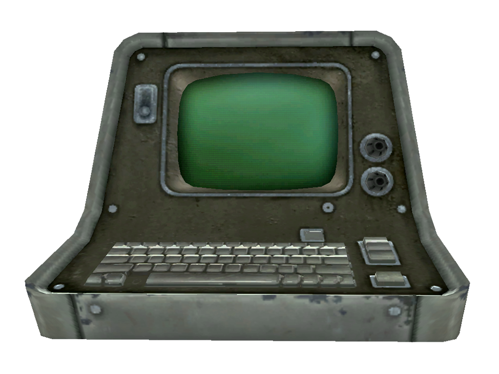

01 | Setting Up Your Workstation
Learn about and install the tools we will be using in this course.
Overview
In this course, we will spend time learning three critical tools for data science:
- The Command Line
- SQL (which we’ll cover in depth the second half of the course)
- Python
Python is usually ranked as the first or second most popular programming language in the world and, just as importantly, it’s also one of the easiest to learn. It’s a general purpose language, which means it can perform a wide range of tasks. The joke goes that Python is the 2nd best language at everything, and there’s some truth to that (although Python is best at some tasks, like machine learning).
Instead of re-writing the great documentation offered by the products, I will provide you with links to the sections that are most important, as well as some extra resources that you might find helpful.
In the realm of software, documentation is your friend, you will not always have a teacher to tell you exactly what to do, so learning to go through documentation is an important skill of itself. Do not skim through the instructions provided. If there are any non-default options needed, I will mention them.
This is going to be by far the most tedious of the lectures in this course. Setting up your computer and environment is a pain but it must be done. This module will comprise of a lot of reading and not a whole lot of doing, but it’s essential you understand the basics of these tools to be successful in class. The following modules will be much more hands on and interactive.
Your computer and the command line
Before we install these tools, we need to get comfortable using the command line. But what exactly is it? Let me explain.
When people refer to the command line, you might hear terms like terminal, console, CLI (command-line interface), and shell used interchangeably. While they’re related, they’re not exactly the same thing. For this course, you don’t need to fully understand every nuance, but having a general sense of these terms will help clear up confusion.
Console
A console historically refers to the physical device used to interact with a computer. In modern terms, it includes the combination of your computer’s screen, keyboard, and mouse.

Terminal
A terminal is a program that allows you to enter commands into your computer. Think of it as the “window” or “app” where you type the instructions that your computer processes.
For example:
- On Windows, the terminal is called Windows Terminal.
- On Mac, it’s simply called Terminal.
The terminal is just like any other program on your computer, such as Word or Excel. You can even replace the default terminal with other options or use terminals built into tools like Visual Studio Code (foreshadowing??). While it may seem intimidating, it’s just a tool for interacting with your computer through text commands.
Command line or Command-Line Interface (CLI)
The command-line interface (CLI) is the actual interface where you type commands for your computer to process. It’s a way of interacting with your operating system using text, rather than clicking with a mouse (which is how you use a GUI, or graphical user interface).
The CLI exists inside the terminal, and you can think of it as the engine running underneath. For simplicity, you can treat the terms terminal and CLI as interchangeable in this course.
Shell
A shell is a program that acts as the interpreter for the commands you enter into the CLI. It takes what you type, processes it, and returns the results.
Your computer’s shell comes pre-installed:
- Linux: Bash (Bourne Again Shell)
- Mac: Zsh (Z Shell)
- Windows: PowerShell (successor to Command Prompt)
A shell also allows you to create scripts, which are files containing sets of commands to automate tasks. While scripting is similar to programming in languages like Python or R, it’s not the focus of this course. For now, we’ll stick to typing individual commands.
Web Searching as an Analogy
Let’s connect what we’ve learned so far with an example of searching the web:
- Terminal: the terminal is like your web browser (Chrome, Edge, or Safari). It’s the environment or “window” where everything happens.
- CLI: The CLI is like the search bar inside your browser (or the one on the mage page of Google or Bing). It’s where you type in your commands (or search queries) for the system to process.
- Shell: The Shell is the search engine itself (Google Search or Bing Search). It takes the query you entered, processes it, and returns the results.
Why are we using the CLI?
Simply put, many tools in the realm of data analytics, data science, and data engineering are designed with the command line in mind first. Graphical user interfaces (GUIs) may follow, but the command line often remains the most powerful and flexible way to interact with these tools. In this class, we need a basic understanding of the CLI to install and set up essential tools and occasionally run scripts.
Don’t be intimidated by the command line! While you may be more familiar with tools or apps that have a visual interface, the command line provides a powerful way to control your computer. If it’s any solace, after this initial setup assignment, we will use the command line sparingly. It’s just essential for getting started.
Understanding working directories
When you use the command line, the concept of a working directory is crucial. The working directory is the folder where your commands operate by default. It’s like being inside the room in a building, you can only interact with the items inside that room unless you explicitly move to a different room.
For example, if you see this prompt on the command line:
CLI
C:\Users\oo0006\Desktop>It means the current working directory is the Desktop
folder inside the user directory of the user oo0006. If you
type a command like dir (to list the files in the working
directory), it will show the contents of the Desktop
folder.
Common symbols and their meaning
\(Backslash): Used in Windows paths to separate folders (e.g.,C:\Users\oo0006\Desktop)./(Forward Slash): Used in Unix-like systems (Linux, macOS) for the same purpose (e.g.,/home/user/Desktop).$: In many tutorials, this symbol represents the start of a command in the command line. It’s a convention to indicate you should enter a command into the terminal. For instance, following code cell means you should typelsinto the terminal and press Enter.:
CLI
$ lsThis is the convention I will be following in my material.
>: In Windows, this symbol is part of the prompt and indicates the terminal is ready for your input.
Changing directories
To navigate the file system in the command line, you use the
cd (change directory) command:
- To move to a specific folder (if you’re in
C:\Users\oo0006\, this will take you toC:\Users\oo0006\Documents):
CLI
$ cd Documents- To go up one level (if you’re in
C:\Users\oo0006\Documents, this will take you back toC:\Users\oo0006\):
CLI
$ cd ..- To move directly to another folder:
CLI
$ cd C:\Program FilesThis takes you straight to C:\Program Files, no matter
where you were previously.
Key takeaways
- The command line is a powerful tool, don’t let its simplicity fool you.
- The working directory determines where commands will execute by default.
- Understanding the prompt and basic navigation commands like
cdcan make the command line much less intimidating.
Visual Studio Code
Now, let’s get into our first general purpose tool: Visual Studio Code. Often referred to as VS Code, this free, lightweight, and versatile code editor is beloved by developers worldwide. It’s available on macOS, Linux, and Windows, and it’s packed with features that make coding more efficient and enjoyable.
Installation
Getting started with VS Code is quick and straightforward. The installation process is user-friendly, with a small download size allowing you to get up and running in minutes.
- Windows Users: Follow the Windows installation guide. Select “Add to PATH” and “Register as default editor” during installation.
- macOS Users: The macOS
installation guide provides clear instructions. You can install it
via the
.dmgfile or with Homebrew if you’re familiar with it.
Learning VS Code
VS Code has a ton of great resources to help you get started, whether you prefer written guides or video tutorials:
- Documentation: The official Getting Started Guide walks you through the basics, including setting up your first project and understanding the interface.
- Tutorials: Explore Tips and Tricks to discover shortcuts, hidden features, and best practices.
- Videos: If you prefer visual learning, check out their Intro Videos for step-by-step walkthroughs.
At the minimum, read the Get Started module as it covers everything from navigation to extensions. For those already familiar with coding, the tips and tricks section is a great way to optimize your workflow.
Extensions
One of the best features of VS Code is its flexibility through its extensions.
Required extensions
These extensions are necessary for completing the coursework:
- Jupyter (Microsoft): Enables seamless interaction with Jupyter Notebooks.
- Python (Microsoft): Provides Python language support, including IntelliSense, linting, and debugging.
- Quarto (Quarto): Allows you to write, render, and preview Quarto documents.
- Ruff (Astral Software): A fast Python linter to ensure clean, error-free code.
Recommended extensions
Optional extensions to improve productivity and make coding more enjoyable:
- Code Spell Checker (Street Side Software): Helps catch typos and spelling errors.
- Material Icon Theme (Philip Kief): Enhances the file explorer with modern, visually appealing icons.
- Rainbow CSV (mechatroner): Adds syntax highlighting for CSV files, making them easier to work with.
- Customize your coding environment with themes.
- I will be using NordStone (Rui Costa).
Git, GitHub, & GitHub Desktop
Git is a version control system that intelligently tracks changes in files. Git is particularly useful when you and a group of people are all making changes to the same files at the same time.
Typically, to do this in a Git-based workflow, you would:
- Create a branch off from the main copy of files that you (and your collaborators) are working on.
- Make edits to the files independently and safely on your own personal branch.
- Let Git intelligently merge your specific changes back into the main copy of files, so that your changes don’t impact other people’s updates.
- Let Git keep track of your and other people’s changes, so you all stay working on the most up-to-date version of the project.
GitHub is a cloud-based platform where you can store, share, and work together with others to write code. You can think of Git as the engine that GitHub runs on.
Storing your code in a “repository” on GitHub allows you to:
- Showcase or share your work.
- Track and manage changes to your code over time.
- Let others review your code, and make suggestions to improve it.
- Collaborate on a shared project, without worrying that your changes will impact the work of your collaborators before you’re ready to integrate them.
When you upload files to GitHub, you’ll store them in a “Git repository.” This means that when you make changes (or “commits”) to your files in GitHub, Git will automatically start to track and manage your changes.
There are plenty of Git-related actions that you can complete on GitHub directly in your browser, such as creating a Git repository, creating branches, and uploading and editing files. But, most people work on their files locally (on their own computer), then continually sync these local changes—and all the related Git data—with the central “remote” repository on GitHub. This is how we will interact with GitHub in this course, with the help of GitHub Desktop.

Once you start to collaborate with others and all need to work on the same repository at the same time, you’ll continually:
- Pull all the latest changes made by your collaborators from the remote repository on GitHub.
- Push back your own changes to the same remote repository on GitHub.
Git figures out how to intelligently merge this flow of changes, and GitHub helps you manage the flow through features such as “pull requests.”
We will be sticking to GitHub’s tools for using Git, so you do not need to install Git separately for this course. In the future, you may want to spend some time understanding Git on its own, but for this course and most companies, understanding GitHub’s (below) workflows is more important.
Setup GitHub
Follow the guides in the order they are presented. Again, I recommend reading through the whole set of Get Started articles, but these are the essentials for this course.
- Creating
an account on GitHub
- Use your Mix account for the email. Your username doesn’t matter; I
used
Ozan Ozbeker - WVU. In this course, we will be using private repositories, but I recommend creating a personal account to add projects for your resume. The final project of this class could be a good start.
- Use your Mix account for the email. Your username doesn’t matter; I
used
- Hello
World
- This is the critical GitHub workflow, make sure you understand it.
- Setting
up your profile
- This will introduce you to using Markdown, which will be essential later in this course and for formatting your READMEs.
GitHub also provides hands-on exercises for many of their articles at GitHub Skills for free. I won’t require you to do any of these as I’m not sure how long they take, but these ones may be of benefit: Introduction to GitHub, Communicate using Markdown, Review pull requests, & Resolve merge conflicts.
Setup GitHub Desktop
GitHub Desktop is a free, open source application that helps you to work with code hosted on GitHub or other Git hosting services. With GitHub Desktop, you can perform Git commands, such as committing and pushing changes, in a graphical user interface, rather than using the command line.
A typical workflow is:
- Use GitHub Desktop to download a GitHub repository to your computer and create a new branch.
- Use an editor such as Visual Studio Code to make changes to the code.
- Return to GitHub Desktop to commit and push the changes to GitHub.
Again, follow the guides in the order they are presented. Again x 2, I recommend reading through the whole set of Get Started articles, but these are the essentials for this course.
- Parts 1 & 2 of Getting
started with GitHub Desktop
- This guide, and all the following, will have specific steps for Mac & Windows.
- Parts 2-5 of Creating
your first repository using GitHub Desktop
- This will be similar to some parts of the GitHub (website) guides above, that’s on purpose.
uv
So far, we’ve only installed VS Code & GitHub Desktop, which are tools we need for this course, but they are not specific to Python. Now we will focus on installing Python as well as a few other tools that will make our coding lives easier.
uv is an extremely fast Python package and project manager. It is how we will manage our project dependencies, including Python itself.
From this point, all of the installation will be done via the command line.
Installation
You can install uv using PowerShell on Windows:
CLI
$ powershell -ExecutionPolicy ByPass -c "irm https://astral.sh/uv/install.ps1 | iex"And curl on macOS:
CLI
$ curl -LsSf https://astral.sh/uv/install.sh | shAt this point, you need to restart your shell, which means close your terminal and open it again.
Now, we check to see that uv is available by running the
uv command:
CLI
$ uv --versionoutput
uv 0.5.20 (1c17662b3 2025-01-15)With that confirmation, we will now install Python to be used across the system:
CLI
$ uv python install 3.12Then you can use uv python list to verify the
installation went through:
CLI
$ uv python listYou will see list of the available versions of Python uv can download as well as where Python 3.12 was installed.
Using uv
To fully appreciate the benefits of uv and why we are using it, it’s essential to understand Python environments, virtual environments, and how uv simplifies these concepts through its Projects interface.
uv provides two ways to handle dependencies (a dependency is any
extra package your project needs that doesn’t come with Python by
default). The preferred approach is the uv project
interface, which includes commands like uv init,
uv add, uv lock, and more. While uv also
includes an implementation of pip, we will not be using it
in this course.
Using uv projects has fewer commands and guides you toward best practices, much like how GitHub Desktop simplifies workflows compared to the full Git CLI tools.
When we installed Python 3.12 earlier using
uv python install 3.12, we were not in a project. As a
result, Python was installed into uv’s default environment. On most
Windows systems, this environment is located at
AppData/Roaming/uv/python/cpython-3.12.8-windows-x86_64-none/python.exe.
However, you don’t need to worry about its location—uv manages it for
you.
To add dependencies to a project using uv, we use the command
uv add [package]. Let’s try downloading Polars, a library we’ll use in the second
half of this course:
CLI
$ uv add polarsoutput
error: No `pyproject.toml` found in current directory or any parent directoryWe encountered an error! This happened because we’re not in a
project. This is one of the many guardrails uv provides when using its
project interface. If we had used uv pip install polars, we
could have installed the package into the default (global) environment.
However, since this is considered bad practice, uv actively discourages
it.
Instead, uv projects leverage virtual
environments using Python’s built-in venv module.
Essentially, each project has its own dependencies without interfering
with others. This isolation prevents version conflicts and keeps your
projects organized.
uv projects also provide a significant advantage: caching. When you use the same dependency across multiple projects, uv only downloads it once and stores it in a cache. For future projects, it reuses the cached files instead of downloading and installing them again. This drastically reduces disk space usage and installation time, especially when working with large or repeated dependencies. For this course, where each Lab & Test will be its own uv project, this feature will save us considerable time.
We’ll get hands-on experience with uv projects in the the Lab, but you can look at the official Working on projects guide if you would like.
Ruff
Many Python packages provide applications that can be used as tools. uv has specialized support for easily invoking and installing tools. Ruff is an extremely fast Python linter and code formatter, made by the creators of uv.
Installation
You can install Ruff with:
Command Line
$ uv tool install ruffUsing Ruff
Ruff’s two main features are its linter and formatter.
A linter analyzes your code for potential errors, bad practices, or violations of style rules. It can give warnings or errors, but it won’t change your code automatically. It’s essentially a spellchecker for your code, pointing out what’s wrong without fixing it.
A formatter automatically adjusts the layout and style of your code to match a predefined set of rules. It produces clean, consistently styled code by modifying it directly.
Ruff’s linter
ruff check is the primary entrypoint to the Ruff linter.
It accepts a list of files or directories, and lints all discovered
Python files, optionally fixing any fixable errors:
Command Line
ruff check # Lint all files in the current directory.
ruff check path/to/code/ # Lint all files in `path/to/code` (and any subdirectories).Ruff supports automatic fixes for a variety of lint errors. For example, Ruff can remove unused imports, reformat docstrings, rewrite type annotations to use newer Python syntax, and more.
To enable fixes, pass the --fix flag to ruff check:
Command Line
ruff check --fix # Lint all files in the current directory, and fix any fixable errors.I don’t recommend using automatic fixes as it can help develop bad habits in coding. Using the Ruff linter to find mistakes is good, but you should work on not making the mistakes to begin with.
Ruff’s formatter
ruff format is the primary entrypoint to the formatter.
It accepts a list of files or directories, and formats all discovered
Python files:
Command Line
ruff format # Format all files in the current directory.
ruff format path/to/code/ # Format all files in `path/to/code` (and any subdirectories).
ruff format path/to/file.py # Format a single file.Run the linter first to identify and fix any errors, then use the formatter to clean up your code’s style. While you’re free to choose any code style (as long as it’s syntactically valid), adhering to a standard makes it easier to learn best practices and collaborate with others. Following a standard format also helps minimize unnecessary diffs in your GitHub changes.
marimo
The final tool we’ll be installing is marimo. marimo is an open-source reactive notebook for Python — reproducible, git-friendly, executable as a script, and shareable as an app.
Installation
You can install marimo with:
Command Line
uv tool install marimoWhy marimo (over VS Code)
We already installed VS Code, why am I making you install another tool to use Python with? I’m glad you asked.
The main difference between traditional Python programming in tools
like VS Code vs interactive notebooks like marimo (or Jupyter Notebook)
is how you write and run your code. In VS Code, you typically write your
entire script in a .py file and run the whole program at
once, with the output appearing in a terminal or console. This approach
is great for building full applications, like downloading data,
automatically refreshing a dashboard, or scraping a website. On the
other hand, interactive notebooks allow you to write and execute code in
smaller chunks, or cells, and see the results (including graphs or
tables) immediately beside the code. This makes notebooks ideal for data
analysis, visualization, prototyping, and/or teaching, as they encourage
experimentation and provide instant feedback.
While VS Code is better suited for maintaining well-organized, modular code, notebooks excel in scenarios that involve step-by-step exploration and explanation. They serve different purposes, but are complementary.
A typical workflow in industry is using notebooks to explore new data, experiment with visuals, try models, and so on. Once the code is in a stable state, the code in the notebook will be turned into a Python package or module to be used in production (software engineering loves to use manufacturing terms.).
Why marimo (over Jupyter Notebook)
We already covered why we may want to use a notebook instead of a regular IDE like VS Code, so why marimo over Jupyter?
marimo is the new kid on the block when it comes to comes to coding notebooks. Jupyter has been the standard for interactive computing for years now, and absolutely deserves its flowers.
From the marimo FAQ: marimo is a reinvention of the Python notebook as a reproducible, interactive, and shareable Python program that can be executed as scripts or deployed as interactive web apps.
- Consistent state: In marimo, your notebook code, outputs, and program state are guaranteed to be consistent. Run a cell and marimo reacts by automatically running the cells that reference its variables. Delete a cell and marimo scrubs its variables from program memory, eliminating hidden state.
- Built-in interactivity: marimo also comes with UI elements like sliders, a DataFrame transformer, and interactive plots that are automatically synchronized with Python. Interact with an element and the cells that use it are automatically re-run with its latest value.
- Pure Python programs: Unlike Jupyter notebooks, marimo notebooks are stored as pure Python files that can be executed as scripts, deployed as interactive web apps, and versioned easily with Git.
Learning marimo
Feel free to look at the User Guide, but we will be going through their interactive tutorials in a later Lab.
You can see some examples of marimo notebooks at their gallery.